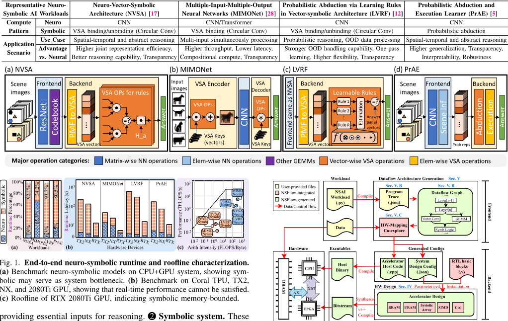
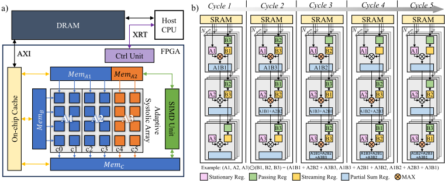
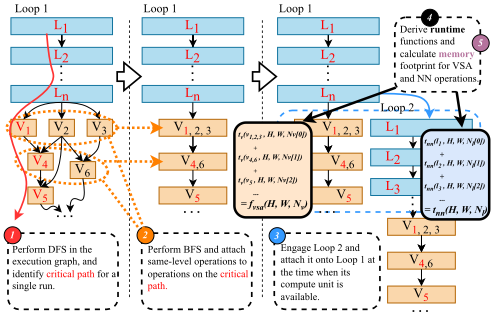
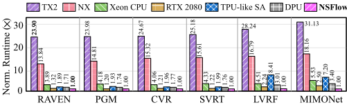
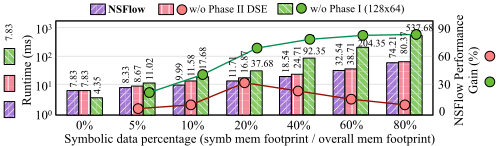

NSFlow：面向神经符号 AI 的可扩展数据流架构端到端 FPGA 框架
论文针对神经符号 AI（NSAI）在 CPU/GPU/TPU 上推理低效的问题：符号模块内存占用高、计算内核异构且位于关键路径，现有 ML 加速器难以兼容。作者提出端到端 FPGA 框架 NSFlow：前端 DAG 从执行 trace 生成 dataflow graph，用解析运行时模型驱动的两阶段 DSE（搜索空间缩减 10^100 倍）自动产出架构配置；后端以参数化 RTL 模板实例化自适应 systolic array（阵列折叠同时执行 NN 与向量符号循环卷积）、可重组片上存储与混合精度单元。在 AMD U250（272MHz）上部署 NVSA/MIMONet/LVRF，相比 Jetson TX2 加速 31 倍、比 GPU 超 2 倍、比 TPU-like 阵列最高 8 倍、比 Xilinx DPU 超 3 倍，符号负载扩大 150 倍时运行时间仅增 4 倍。对团队而言，其'特征分析→解析建模→DSE→配置化 RTL'的架构生成闭环对 2.1 的 workload-driven 建模有方法学借鉴价值，但应用领域与团队存储/互连 IP 方向差异较大。
神经符号 AI（NSAI）将神经网络与符号推理结合，但在现有硬件（CPU、GPU、TPU）上执行低效，原因有三：(1) 高内存占用——NSAI 依赖向量符号架构（VSA），内存足迹常达数十至数百 MB，无法完全片上缓存；(2) 异构计算内核——除神经网络外还包含向量卷积、逐元素操作与逻辑推理，数据复用低、阵列利用率低、并行度有限；(3) 关键路径依赖——符号推理依赖神经模块输出，拉长推理关键路径。论文实测单次推理任务在 NVIDIA 桌面 GPU 上耗时超过 3 分钟，且 NSAI 算法在操作类型与规模上差异大，与现有 ML 加速器不兼容，FPGA 部署又面临片上资源组织复杂与内存容量受限的困难。论文目标是构建一个高效、可扩展、通用的 NSAI 加速框架。
NSFlow 由前端与后端构成。前端 Design Architecture Generator（DAG）从用户 workload 编译提取执行 trace，经 DFS 识别关键路径、BFS 识别 loop 内并行、跨 loop 并行融合与运行时/内存代价推导，生成 dataflow graph；随后执行两阶段设计空间探索：Phase I 基于解析运行时模型（NN 与 VSA 节点的运行时间函数）在最大 PE 数约束下搜索最优子阵列高度 H、宽度 W、数量 N 及静态划分，Phase II 以 O(N) 复杂度按 NN 层粒度微调 NN/VSA 子阵列映射，将约 10^300 的设计空间缩减 10^100 倍。后端为参数化 RTL 模板：自适应 systolic array（AdArray）通过 array folding 划分多个子阵列同时执行 NN 与向量符号循环卷积（每个 PE 增加 Passing Register 造成 1 拍流水错位实现循环卷积流式计算，NN 模式下经 mux 旁路）；可重组片上存储由双缓冲的 Mem A/B/C（18KB BRAM 组成）、URAM 片上 cache 与 LUTRAM 构成，容量由 DAG 依 workload 特征决定；支持 FP16/8 与 INT8/4 混合精度（如 NVSA 中 NN 用 INT8、符号运算用 INT4）；自定义 SIMD 单元处理向量归约与逐元素操作。前端输出设计配置文件实例化硬件并生成主机代码，经 Xilinx Vivado 与 Synopsys Design Compiler 综合为 bitstream，在 AMD U250 上以 272MHz 运行，CPU 通过 XRT API 经 AXI 接口调度 kernel 与 off-chip 事务。
端到端性能：相对 Jetson TX2 加速 31 倍、Xavier NX 18 倍，相对 RTX 2080 GPU 超 2 倍，相对 128×128 TPU-like systolic array 最高 8 倍，相对 Xilinx DPU 超 3 倍
可扩展性：符号负载扩大 150 倍时运行时间仅增加 4 倍
混合精度（NN 用 INT8、符号用 INT4）在 RAVEN/I-RAVEN/PGM/CVR/SVRT 数据集上保持与 NVSA 原算法相当的推理精度，同时节省 5.8 倍内存占用
两阶段 DSE 算法以 O(N) 复杂度将约 10^300 的设计空间缩减 10^100 倍；相比仅 array folding（Phase I），DSE 在符号与 NN 负载均衡（符号内存占比约 20%）时带来最高 44% 的性能增益
消融实验：符号数据占内存 80% 时，NSFlow 相对传统 systolic array 加速超过 7 倍；符号占比 <1% 时阵列划分引入轻微开销
部署配置：AMD U250 FPGA，Xilinx Vivado 与 Synopsys Design Compiler 综合，时钟频率 272MHz
据论文所述，NSFlow 是首个面向通用 NSAI workload 的自动化端到端加速与部署框架。与已有工作的区别：(1) 不同于只针对单一任务在传统 systolic array 上做映射的 DSE 工作，NSFlow 在硬件级与映射级同时利用 NSAI 任务间与任务内并行性；(2) AdArray 通过阵列折叠与 PE 级 Passing Register 设计，在同一阵列上高效支持 NN 与向量符号循环卷积两类异构内核，而传统 TPU 阵列对循环卷积的时空映射非理想、效率极低；(3) 前端自动从执行 trace 生成 dataflow graph 并以两阶段 DSE 自动产出架构配置与主机代码，实现从算法描述到 FPGA bitstream 的设计自动化，而非手工定制加速器。
相关度级别：medium
命中能力域：2.1 IP 架构与微架构
理由：论文主题（神经符号 AI 的 FPGA 加速）与团队存储/互连 IP 产品线（LPDDR/HBM/UCIe 等）无直接交集，不涉及 UVM 验证、形式验证、Emulation 或时序/物理实现流程，故不判 high。但其方法学对 2.1 有借鉴价值：论文展示了完整的 workload-driven 架构生成闭环——先在真实设备上做端到端延迟分解与 roofline 分析定位瓶颈（得出符号模块 memory-bounded、神经模块 compute-bounded），再建立算子级解析运行时模型驱动两阶段 DSE 与空间剪枝，最终以参数化 RTL 模板加配置文件实例化微架构；这一'特征分析→解析建模→DSE→配置化 RTL'流程与团队在 IP 架构定义中面向 PPA 的 workload-driven 建模与架构权衡思路同构。其可重组片上存储（双缓冲、BRAM/URAM/LUTRAM 分级）与 AXI off-chip 事务管理对存储类 IP 也有一般性参考。但论文核心技术（阵列折叠、VSA 循环卷积流式计算、混合精度量化）深度绑定 AI 加速器场景，无法直接迁移到团队技术栈，故判 medium。
建议动作：作为方法参考存档
arXiv:2504.19323v2 [cs.AR] 2025年4月29日
Hanchen Yang ∗ 1 , Zishen Wan ∗ 1 , Ritik Raj 1 , Joongun Park 1 , Ziwei Li 1 , Ananda Samajdar 2 , 1 1
Arijit Raychowdhury , Tushar Krishna
1 佐治亚理工学院，佐治亚州亚特兰大
2 IBM 研究院，纽约州约克敦海茨
摘要—神经符号人工智能（NSAI）是一种新兴范式，它将神经网络与符号推理相结合，以提升人工智能系统的透明度、推理能力和数据效率。近年来，NSAI 系统因其在推理任务和人机协作场景中的卓越表现而日益受到关注。尽管算法层面取得了这些进展，但由于 NSAI 任务具有异构的计算核心、高访存强度以及独特的访存模式，在现有硬件（如 CPU、GPU、TPU）上执行 NSAI 任务仍然充满挑战。此外，当前的 NSAI 算法在操作类型和规模上差异显著，导致其与现有机器学习（ML）加速器不兼容。这些挑战凸显了打造一个面向 NSAI 工作负载、通用且灵活的加速框架的必要性。
本文提出 NSFlow，一种基于 FPGA 的加速框架，旨在跨各类 NSAI 系统实现高效率、可扩展性与通用性。NSFlow 的特色在于一个设计架构生成器，它能够识别工作负载的数据依赖关系并创建优化的数据流架构；同时还包含一个可重构阵列，具备灵活的计算单元、可重组的存储器以及混合精度能力。在多种 NSAI 工作负载上的评估表明，NSFlow 相比 Jetson TX2 取得 31 × 的加速，相比 GPU 超过 2 ×，相比类 TPU 脉动阵列取得 8 × 的加速，相比 Xilinx DPU 超过 3 ×。NSFlow 还展现出更强的可扩展性：当符号工作负载规模扩大 150 × 时，运行时间仅增加 4 ×。据我们所知，NSFlow 是首个能够对可泛化的 NSAI 算法实现实时加速的框架，为下一代认知系统展示了一种有前景的解决方案。
神经符号人工智能（NSAI）已成为一种有望实现通用人工智能（AGI）和类人流体智能的颇具前景的范式。与深度神经网络（DNNs）相比，NSAI 在类人学习、推理和逻辑思维等认知任务中展现出更优越的性能 [1]-[9]。NSAI 协同地将神经方法（如 DNNs）与符号表示（如向量、逻辑、图）相结合，以提升认知能力 [10]-[16]。
尽管具有认知优势，在资源受限设备上实现实时且高效的 NSAI 推理仍面临重大挑战。这些挑战源于更高的访存强度、更大的计算核异构性、不规则的存储器访问模式以及硬件资源的利用不足。在我们的实验中，在 NVIDIA 桌面级图形处理器（GPU）上执行单个推理任务需要 > 3 分钟 [17]，这凸显了当前解决方案的低效。
已有研究指出了 NSAI 的三个主要挑战 [18]：第一，高内存占用。NSAI 系统严重依赖向量符号架构（VSAs），这类架构使用向量运算来编码符号知识，导致庞大的内存占用（通常为数十至数百 MB），并使得在硬件加速器中将其完全缓存于片上变得不切实际。第二，异构计算核。除神经网络之外，NSAI 工作负载还包含多种规模各异的计算，例如向量卷积、逐元素运算和逻辑推理。这些计算表现出低数据复用率、低计算阵列利用率和有限的并行性，导致其在 GPU 和张量处理单元（TPU）上的运行效率低下。第三，关键路径依赖。符号推理通常依赖于神经感知模块的输出，这延长了认知推理期间的关键路径，并导致传统加速器的利用不足。
∗ 同等贡献。(hanchen@gatech.edu, zishenwan@gatech.edu)
本工作部分受 CoCoSys 资助；CoCoSys 是 JUMP 2.0 的七个研究中心之一，而 JUMP 2.0 是由美国国防高级研究计划局（DARPA）资助的半导体研究公司（Semiconductor Research Corporation）项目。
随着对面向 NSAI 的可扩展数据流与架构解决方案需求的不断增长，现场可编程门阵列（FPGA）凭借其可定制性、灵活的存储器管理以及可重构性，成为能够适应不断演进的 NSAI 工作负载的理想平台。已有研究证明了 FPGA 在加速机器学习（ML）工作负载方面的潜力 [19]-[24]。然而，由于片上资源组织的复杂性以及有限的存储容量，NSAI 算法的 FPGA 部署仍然充满挑战 [25]-[27]。
为了应对这些挑战，我们识别出提升 NSAI 加速效率的独特机遇，并提出了 NSFlow——一个可扩展的基于 FPGA 的数据流架构设计自动化框架。据我们所知，NSFlow 是首个用于加速和部署通用 NSAI 工作负载的自动化端到端解决方案。NSFlow 的前端子系统配备数据流架构生成器，包括 NSAI 执行轨迹提取、数据流图生成以及两阶段设计空间协同探索策略；其后端子系统则采用灵活的神经符号硬件架构，具备自适应阵列折叠、可重构存储器划分以及高效异构存储。通过前端与后端的集成，NSFlow 为 NSAI 工作负载提供高效且可扩展的加速。具体而言，它识别数据依赖关系、探索设计空间选项，并生成针对 FPGA 部署而定制的优化数据流架构。
因此，本文做出以下贡献：
本节介绍 NSAI 算法及其关键内核（第 II-A 节），并分析其工作负载特性（第 II-B 节）。
神经符号人工智能（NSAI）将神经网络的学习能力与符号人工智能的推理能力协同融合，提供了超越传统深度神经网络（DNN）的数据高效学习以及透明、合乎逻辑的决策。1 神经系统。该过程始于一个神经模块，该模块通过解读感知数据并生成有意义的场景与对象表示来处理感知任务，为推理提供必要的输入。2 符号系统。随后，这些特征被传递给符号系统进行推理，通过利用已建立的物理世界模型（例如规则和编码知识），提升了可解释性并降低了对大量训练数据的依赖。这一步骤将神经网络学到的知识与符号规则相整合，使系统既能从新数据中学习，又能基于已有知识进行逻辑推理。符号推理的输出被用于决策以及响应或动作的生成。
表 I
神经符号模型。选取用于分析的 NSAI 工作负载，代表多样化的应用场景。
| Representative Neuro- Symbolic AI.Compute | Workloads.Neuro | Neuro-Vector-Symbolic Architecture (NVSA) [17].CNN | Multiple-Input-Multiple-Output Neural Networks (MIMONet) [28].CNN/Transformer | Probabilistic Abduction via Learning Rules in Vector-symbolic Architecture (LVRF) [12].CNN | Probabilistic Abduction and Execution Learner (PrAE) [5].CNN |
|---|---|---|---|---|---|
| Pattern | Symbolic | VSA binding/unbinding (Circular Conv) | VSA binding (Circular Conv) | VSA binding/unbinding (Circular Conv) | Probabilistic abduction |
| Application Scenario | Use Case | Spatial-temporal and abstract reasoning | Multi-input simultaneously processing | Probabilistic reasoning, OOD data processing | Spatial-temporal and abstract reasoning |
| Application Scenario | Advantage | Higher joint representation efficiency, | Higher throughput, Lower latency, | Stronger OOD handling capability, One-pass | Higher generalization, Transparency, |
| Application Scenario | vs. Neural | Better reasoning capability, Transparency | Compositional compute, Transparency | learning, Higher flexibility, Transparency | Interpretability, Robustness |
| Representative Neuro- Symbolic AI.Compute | Workloads.Neuro | Neuro-Vector-Symbolic Architecture (NVSA) [17].CNN | Multiple-Input-Multiple-Output Neural Networks (MIMONet) [28].CNN/Transformer | Probabilistic Abduction via Learning Rules in Vector-symbolic Architecture (LVRF) [12].CNN | Probabilistic Abduction and Execution Learner (PrAE) [5].CNN |
表 I 重点介绍了四种具有代表性的神经符号工作负载：用于时空推理的 NVSA [17]、用于多输入处理的 MIMONet [28]、用于概率溯因的 LVRF [12]，以及用于抽象推理任务的 PrAE [5]。这些工作负载展现出卓越的推理能力，代表了实现类人智能的一种有前景的范式。这些方法将用于神经部分的卷积神经网络（CNN）与用于符号处理的向量符号架构（VSA）相结合。
VSA 的一项关键运算是分块循环卷积，它以能同时保留两个向量信息的方式将二者组合，因而适合用于表示复合符号。从数学上讲，两个向量 A 和 B（维度均为 N）的循环卷积生成向量 C：C [ n ] = ∑ N - 1 k =0 A [ k ] · B [( n - k ) mod N ]，其中 C 的每个元素是将 A 的元素与 B 循环移位后的相应元素相乘、再求和得到的。循环卷积具有交换律和结合律性质，使其在结构化信息操作至关重要的层次化推理任务中尤为有效。
为了解神经符号人工智能（Neuro-Symbolic AI）工作负载在真实设备上的效率，近期工作 [29] 分别在 Coral edge TPU（4 W）、Jetson TX2（15 W）、Xavier NX（20 W）和 RTX 2080Ti（250 W）上，对表 I 中详述的四个代表性模型进行了性能剖析。

端到端延迟分解。图 1a 和图 1b 展示了神经符号工作负载的端到端延迟分解，突出了三个关键观察：(1) 所有设备均无法满足实时性能。即使利用额外计算资源来缩短神经网络（NN）的运行时间，符号推理带来的巨大开销仍使实时执行无法实现。(2) 符号运算主导运行时间。例如，符号模块占 NVSA 总运行时间的 87%，却仅贡献其总 FLOPS 的 19%，这表明 GPU/TPU 无法高效处理符号运算。(3) 符号推理计算位于关键路径上，因为其计算依赖于神经模块的输出。
系统 Roofline 分析。图 1c 采用 RTX 2080Ti GPU 版本的 Roofline 模型来量化神经符号工作负载。我们观察到，符号模块是访存受限（memory-bounded）的，而神经模块是计算受限（compute-bounded）的。这主要是由于符号运算需要流式处理向量元素，增加了内存带宽压力，从而导致硬件利用率不足。
NSFlow 是一个端到端框架，能够识别数据依赖、探索设计空间，并针对给定的神经符号人工智能（NSAI）工作负载生成面向 FPGA 部署的最优数据流架构设计。图 2(a) 展示了所提出框架的总体概览，该框架分为前端和后端。
设计架构生成器（DAG）是主机侧前端的核心组件。DAG 模块首先从用户提供的工作负载中提取执行轨迹。随后，它生成一个专为基于 VSA 的 NSAI 工作负载设计的数据流图，捕获算子级规格、运行时、存储器功能及其数据依赖。该数据流图通过一种新颖的两阶段算法用于数据流架构的协同探索。第一阶段为 FPGA 加速器确定最优的系统设计配置，而第二阶段则确定高效（或近最优）的重配置与映射方案。这些配置在加速器主机代码中予以指定，使 CPU 能够通过 XRT API 调用设备内核。编译完成后，CPU 执行主机二进制文件，以调度 FPGA 上的操作。
NSFlow 后端包含一个预定义的加速器模板，该模板由若干关键组件构成：用于灵活片上存储的 BRAM 块、用于并行神经与符号运算的自适应脉动阵列（Systolic Array）、用于逐元素运算、向量归约和标量运算的 SIMD 单元，以及用于硬件级任务调度的控制逻辑。这些组件通过前端生成的系统设计配置文件进行参数化，从而能够基于工作负载特征分析实例化出经过优化的微体系结构。随后，NSFlow 对 RTL 进行综合与编译，生成可执行的比特流以供部署。在实时推理过程中，CPU 执行主机二进制代码以运行 FPGA 内核，并通过 AXI 接口管理片外存储器事务。
我们将以自底向上的方式介绍 NSFlow 的设计：首先介绍后端灵活的神经符号硬件架构（第 IV 节），随后介绍前端的图与数据流架构生成器（第 V 节）。
本节首先概述 NSFlow 硬件架构（第 IV-A 节），随后逐一介绍我们的设计，包括 NS 自适应脉动阵列（第 IV-B 节）、可重组片上存储器（第 IV-C 节）、自适应混合精度计算（第 IV-D 节）以及高效的定制单指令多数据（SIMD）单元（第 IV-E 节）。
The profiled NSAI workloads feature heavy memory usage and versatile computing kernels, thus we design a flexible memory system to enable smooth executions and transactions with limited FPGA onchip memory resource ( ∼ 36MB on ZCU104), which features 1 Reorganizable memory partition , 2 Adaptive memory size , and 3 Efficient heterogeneous storage to fully exploit FPGA's potential and maximize memory efficiency for NSAI workloads.
As shown in Fig. 3, the on-chip memory system consists of three memory blocks Mem A , Mem B , and Mem C , an on-chip cache, and a memory bus for off-chip transactions. Mem A , Mem B , and Mem C are all double-buffered memories to enable seamless read and write among off-chip memory and the systolic array. 1 Mem A is partitioned into two chunks - Mem A 1 and Mem A 2 - to simultaneously load NN layers and vector data for the corresponding sub-array in AdArray . When performing NN operations or vector operations singularly, the two memory chunks can be merged into one at runtime for better performance and simpler control. MemB works as the IFMAP buffer in normal systolic arrays which feeds data to the horizontal inputs of AdArray only for NN processing. Mem C stores the outputs from AdArray and the SIMD unit which are either read by the compute units, or written to Mem A / Mem B or off-chip DRAM. The on-chip cache buffers intermediate results for the 3 memory blocks. 2 The sizes of all above memory components will be defined by DAG based on workload's characteristics and dataflow. 3 In real FPGA deployment, Mem A , Mem B , and Mem C are comprised of numerous 18KB BRAM blocks for maximum configurability, and on-chip cache is built with URAM considering its large capacity (288KB per block). Small registers and buffers in compute element use LUTRAMs for fast and dynamic access.

为了提高计算效率并节省片上存储器占用，NSFlow 支持在用户于前端指定的工作负载的不同组件中采用从 FP16/8 到 INT8/4 的混合精度。DAG 采用可适应多种精度的计算单元。以 NVSA 为例，NN 与 Symbolic 运算分别被量化为 INT8 和 INT4，因此 AdArray 中的乘法器和 SIMD 同时支持这两种精度，并充分利用 DSP 单元 [30]。低精度加法则由 LUT 处理，以快速得到结果。
NSFlow 集成了一个定制 SIMD 单元，用于高效执行向量归约、逐元素运算等操作，并在 NSFlow 阵列的输出与输入 SRAM 之间实现流畅的数据传输，以支持连续执行。该单元由多个处理元件（PE）组成，每个 PE 均配备紧凑的逻辑电路（即求和、乘/除、exp/log/tanh、归一化、softmax 等），用于处理向量运算，或对混合量化级别的数据执行优化的稀疏计算。
在前端，我们实现了一个数据流架构生成器（Dataflow Architecture Generator, DAG），它首先根据从工作负载中提取的操作轨迹构建数据流图，随后生成最优（或次优）的数据流架构设计；该设计由用于实例化硬件模块的设计配置文件，以及供 CPU 调度加速器核函数的主机代码来定义。
本节首先指出神经符号人工智能（NSAI）数据流所面临的挑战（第 V-A 节）。随后，我们阐述生成操作图并进而生成数据流图的过程（第 V-B 节）。最后，我们讨论 DAG 如何基于数据流图搜索最优的架构设计与映射（第 V-C 节）。
我们指出了三个主要的 NSAI 数据流挑战（图 4(b)）。首先，神经组件与符号组件的顺序执行和频繁交互导致延迟增加、系统吞吐量低下。其次，异构的神经核函数与符号核函数导致机器学习（ML）加速器的计算阵列利用率和效率低下。第三，两类组件中均表现出的大量内存事务可能造成较大的通信延迟，而这在 FPGA 部署中甚至更具挑战性。
DAG 通过以下方式完美应对上述挑战：首先，通过数据流图识别数据依赖关系，借助特色硬件架构充分挖掘神经网络（NN）操作与符号操作之间的并行机会；其次，凭借设计级灵活性与核函数级灵活性，在我们的 AdArray 上平衡 NN 与符号操作，从而实现最大利用率；第三，自适应地配置存储单元，使之最佳适配工作负载的内存使用，从而消除不必要的事务与停顿。
graph(): ... // Neuro Operation - CNN (Resnet18) %relu_1[16,64,160,160] : call_module[relu](args = (%bn1 [16,64,160,160])) %maxpool_1[16,64,160,160] : call_module[maxpool](args = (%relu_1[16,64,160,160])) %conv2d_1[16,64,160,160] : call_module[conv2d](args = (%maxpool_1[16,64,160,160])) ... // Symbolic Operations // Inverse binding of two block codes vectors by blockwise cicular correlation %inv_binding_circular_1[1,4,256] : call_function[nvsa. inv_binding_circular](args = (%vec_0[1,4,256], % vec_1[1,4,256])) %inv_binding_circular_2[1,4,256] : call_function[nvsa. inv_binding_circular](args = (%vec_3[1,4,256], % vec_4[1,4,256])) // Compute similarity between two block codes vectors %match_prob_1[1] : call_function[nvsa.match_prob](args = (%inv_binding_circular_1[1,4,256], %vec_2 [1,4,256])) // Compute similarity between a dictionary and a batch of query vectors %match_prob_multi_batched_1[1]: call_function[nvsa. match_prob_multi_batched](args = (% inv_binding_circular_2[1,4,256], %vec_5[7,4,256])) %sum_1[1] : call_function[torch.sum](args = (% match_prob_multi_batched_1[1])) %clamp_1[1] : call_function[torch.clamp](args = (%sum_1 [1])) %mul_1[1] : call_function[operator.mul](args = (% match_prob_1[1], %clamp_1[1])) ...
Program trace. NSFlow first extracts an execution trace from input program through compilation, and pre-process the file to be ready for later dataflow graph generating. Listing 1 exhibits a snapshot taken from NVSA program trace, with representative kernels for Neural and Symbolic parts showing data dependencies.
Dataflow Graph. Fig. 4 depicts how a Dataflow Graph is derived. 1 Critical path identification: It begins with a DFS through the execution graph previously generated, identifying the critical NSFLOW DESIGN SPACE. Maximum #PEs = 2 m . With exploration phasing and space pruning , search space is reduced by 100 magnitudes.

| HW config | ( H,W,N ) Array partition and mapping Total design space, m | = 10 |
|---|---|---|
| Original m × ( m | +1) / 2 ( N - 1) k for each N | 10 300 |
| DAG Phase I: 1 / | 4 ≤ H/W ≤ 16 Phase II: Iter × #layers | 10 3 |
| HW config | ( H,W,N ) Array partition and mapping Total design space, m | = 10 |
工作负载中单个循环的路径。2 循环内并行性识别：随后，DAG 使用广度优先搜索（BFS）再次遍历该图，识别出与关键路径上节点处于同一深度的操作节点，并将它们挂接到相应的关键路径节点上，以标示它们的最早执行时机与并行性。对于单个循环而言，由于 NN 各层之间存在严格的层间依赖，NN 层通常位于关键路径上且不挂接任何节点；而符号部分可能拥有更多并行机会，因而形成更多分组节点。3 循环间并行性识别：在为单个循环重塑图结构之后，DAG 将下一个循环的图挂接到已有图上，具体做法是将第二个循环的第一个操作定位在其所需计算单元被释放的时刻。例如，在图 4(b) 所示的第三步中，循环 2 中的第一个 NN 层（L 1）在循环 1 的最后一个 NN 层（L n）完成后立即启动，并与循环 1 中的符号操作一同运行。4 运行时函数推导：对于新融合图中的每个节点，DAG 结合操作参数（即向量数量 n 与维度 d、NN 层的 m、n、k 维度等）与配置变量（即子阵列的高度、宽度和划分方案），推导其在相应子阵列上的运行时函数（第 V-C 节）。5 内存开销计算：DAG 还基于每个节点的数据大小计算内存占用，以便后续进行内存块配置。
数据流图（Dataflow Graph）描述了数据依赖关系、循环内/循环间并行性，以及用于在 AdArray 上实时执行的运行时与内存开销模型。接下来，我们将讨论 DAG 如何利用它来探索硬件（HW）设计与映射。
设计空间。NSFlow 的自适应架构（第 IV 节）与数据流图（第 V-B 节）共同构成了一个庞大的交叉耦合设计空间，该空间由硬件配置（包括子阵列的高度（H）、宽度（W）和数量（N））以及映射方案共同定义；映射方案由运行神经网络（NN）层和向量符号架构（VSA）操作的子阵列数量指定（即层节点 i 对应 N_l[i]，VSA 节点 j 对应 N_v[j]，其中），且这些数量在运行时可为数据流图中的每个节点而变化。注意，N_l 和 N_v 均为向量变量，其长度等于单个循环中层节点与 VSA 节点的数量。该设计空间的总规模达到 10^300（表 IV），使得暴力搜索不切实际。接下来，我们将介绍如何为各节点推导运行时函数，以及我们独特的设计空间探索（DSE）算法。
| Workloads. | Precision AdArray.NN | Precision AdArray.Symb | Precision AdArray.Size (H, W, N) | Configuration SIMD.Default Partition ( ¯ N l : ¯ N v ) | Configuration SIMD. | Size.MemA1, MemA2 | On-chip SRAM Blocks (BRAM).Mem B | On-chip SRAM Blocks (BRAM). | On-chip SRAM Blocks (BRAM).Mem C | On-chip Cache (URAM).On-chip Cache (URAM) | AMD U250 Utilization.DSP | AMD U250 Utilization.LUT | AMD U250 Utilization.FF | AMD U250 Utilization.BRAM | AMD U250 Utilization.URAM | AMD U250 Utilization.LUTRAM | Frequency. |
|---|---|---|---|---|---|---|---|---|---|---|---|---|---|---|---|---|---|
| NVSA | INT8 | INT4 | 32, 16, 16 | 14 : 2 | 64 | 2.7 MB, 1.1 MB | 2.7 MB | 1.6 MB | 16.2 MB | 89% | 56% | 60% | 34% | 8% | 24% | 272 MHz | |
| MIMONet | INT8 | INT8 | 32, 32, 8 | 6 : 2 | 64 | 3.4 MB, 1.2 MB | 3.4 MB | 2.1 | MB | 20.1 MB | 89% | 44% | 52% | 43% | 10% | 20% | 272 MHz |
| LVRF | INT8 | INT4 | 32, 16, 16 | 14 : 2 | 64 | 2.7 MB, 0.96 MB | 2.7 MB | 1.4 MB | 15.5 MB | 89% | 56% | 60% | 31% | 7% | 24% | 272 MHz |
| Workloads. | Precision AdArray.NN | Precision AdArray.Symb | Precision AdArray.Size (H, W, N) | Configuration SIMD.Default Partition ( ¯ N l : ¯ N v ) | Configuration SIMD. | Size.MemA1, MemA2 | On-chip SRAM Blocks (BRAM).Mem B | On-chip SRAM Blocks (BRAM). | On-chip SRAM Blocks (BRAM).Mem C | On-chip Cache (URAM).On-chip Cache (URAM) | AMD U250 Utilization.DSP | AMD U250 Utilization.LUT | AMD U250 Utilization.FF | AMD U250 Utilization.BRAM | AMD U250 Utilization.URAM | AMD U250 Utilization.LUTRAM | Frequency. |
| Reasoning Accuracy | FP32 | FP16 | INT8 | MP (IN8 for NN, INT4 for Symb) | INT4 |
|---|---|---|---|---|---|
| RAVEN [32] | 98.9% | 98.9% | 98.7% | 98.0% | 92.5% |
| I-RAVEN [33] | 99.0% | 98.9% | 98.8% | 98.1% | 91.3% |
| PGM [34] | 68.7% | 68.6% | 68.4% | 67.4% | 59.9% |
| Memory | 32MB | 16MB | 8MB | 5.5MB | 4MB |
| Reasoning Accuracy | FP32 | FP16 | INT8 | MP (IN8 for NN, INT4 for Symb) | INT4 |
mapping scheme further by efficiently fine-tuning N l and N v around ¯ N l and ¯ N v in the dataflow loop with maximum number of iterations pre-defined as Iter max , seeking optimal or near-optimal partitions. Searching granularity is set to the span of each NN layer, as VSA kernels are in general smaller and more flexible to be fit into arbitrary array shapes. With O ( N ) complexity, our two-phase DSE algorithm shrinks the design space by 10 100 × shown in Tab. IV.
Memory and SIMD unit. After generating the design of AdArray , memory blocks sizes are computed based on node memory cost to eliminate inner-node memory stalls, for example M A 1 = max ( filter size in R l ) , M A 2 = max ( node size in R v ) . M A 1 and M A 2 are merged for non-parallel operations. On-chip cache size is 2 × ( M A + M B + M C ) . SIMD size is minimized such that latency of concurrent elem-wise/vector reduction operations can be hidden.
Unlike other DSE work [35], [36] that only focuses on single task mapping on traditional systolic array, NSFlow exploits NSAI inter-task and inner-task parallelism opportunities on AdArray at both hardware level and mapping level, boosting the performance of versatile NSAI workloads.
算法设置。我们在常用的时空推理数据集——RAVEN [32]、I-RAVEN [33]、PGM [34]、CVR [37] 和 SVRT [38] 上，采用三种最先进的基于向量符号架构（VSA）的神经符号人工智能（NSAI）工作负载（即 NVSA [17]、MIMONet [28] 和 LVRF [12]）对 NSFlow 进行评估。遵循 [12]、[17]、[28] 的做法，我们根据验证集上的端到端推理性能来选择训练超参数。
硬件设置。我们考虑了多种硬件基线，包括 TX2、Xavier NX、Xeon CPU、RTX 2080 以及机器学习（ML）加速器（TPU、Xilinx DPU）。NSFlow 框架可部署于任何类型的现场可编程门阵列（FPGA）板卡。表 III 展示了使用 Xilinx Vivado 和 Synopsys Design Compiler 在 AMD U250 上对 3 种算法的部署情况。时钟频率设置为 272MHz。
混合精度性能。我们在三个时空推理数据集上对神经符号人工智能（NSAI）模型进行基准测试，以首先评估 NSFlow 中混合量化的有效性。如表 IV 所示，可以观察到 NSFlow 混合精度在达到与 NVSA 算法 [17] 相当精度的同时，实现了 5.8 × 的内存占用节省。在 CVR/SVRT 数据集上的 MIMONet/LVRF 中也观察到了类似结果。同样值得注意的是，神经符号方法始终比基于神经网络的方法取得更强的认知与推理能力，并超越了人类表现。


性能提升。我们首先将 NSFlow 加速器与边缘片上系统（SoC）（Jetson TX2、Xavier NX）、Intel Xeon CPU、Nvidia RTX 2080、类 TPU 脉动阵列（128 × 128）以及 Xilinx DPU 进行基准对比。用于在六个难度各异的推理任务上加速 NSAI 算法。从图 5 中可以观察到，NSFlow 加速器始终优于其他设备：相比 TX2 和 NX 提供 31 × /18 × 的加速，相比 GPU 超过 2 ×，相比类 TPU 脉动阵列最高可达 8 × 的加速，并且在某些标准工作负载上相比 Xilinx DPU 提供超过 3 × 的加速。
消融研究。为了进一步展示 NSFlow 的可扩展性并验证所提出的设计空间探索（DSE）算法的必要性，我们在图 6 中总结了 NSFlow 生成的架构（32 × 32 × 8）在包含与不包含所提出的映射与硬件技术两种情况下的运行时间，评估在一个向量符号数据比例各不相同的类 NVSA 工作负载上进行，并与 ResNet18 一同运行。我们观察到，尽管当符号部分极小（< 1%）时阵列划分会带来轻微开销，但（1）随着符号比例的上升，NSFlow 相对于传统脉动阵列的加速比稳步增长，当符号数据占据 80% 的内存时最高可超过 7 ×；（2）当符号工作负载与神经网络（NN）相平衡时（符号内存占比 ≈ 20%），我们的两阶段 DSE 算法（相比仅具有阵列折叠，即阶段 I）所带来的性能增益可达 44%。这些发现凸显了 NSFlow 适应不同工作负载的可扩展性，以及其在处理符号密集场景时的高效性。
为了在实时认知应用中实现高效的神经符号人工智能（NSAI），我们提出了 NSFlow，这是首个用于加速 NSAI 系统的端到端设计自动化框架。NSFlow 利用 NSAI 工作负载的独特特性，探索数据流与架构设计空间，并为现场可编程门阵列（FPGA）部署生成可扩展的设计。我们相信，NSFlow 为推进高效的认知推理系统、开启 NSAI 的全新可能性铺平了道路。